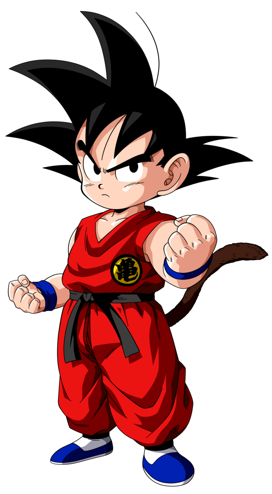

 Con este dato certificado y teniendo también la fecha del Torneo del Poder en el año 780, a finales de Dragon Ball Super podemos extrapolar que Goku tiene 43 años
Los saiyajins viven casi lo mismo que un humano promedio, solo que estos envejecen mucho mas tarde que un humano para luchar. Los dioses de la destrucción están ligados a la vida de los Kaioshines, por eso viven millones de años.